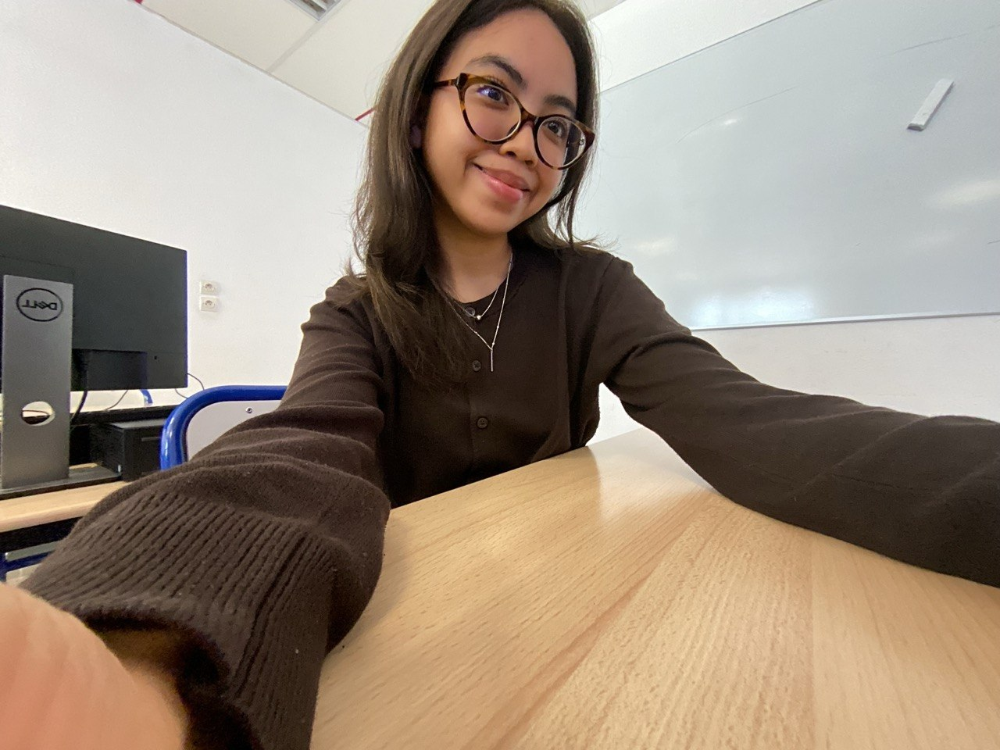

Bonjour !
Bienvenue sur mon portfolio
Aisya BINTI ADIL ZAHNI
Étudiante en 1re année de BUT Réseaux & Télécommunications à l’IUT Nice Côte d’Azur
et originaire de Malaisie, je suis passionnée par les réseaux, la cybersécurité
et le développement informatique.
Ici, vous trouverez mes projets, mes compétences, mes passions ainsi que davantage
d’informations sur mon parcours. N’hésitez pas à me contacter !

Aisya ♥
★